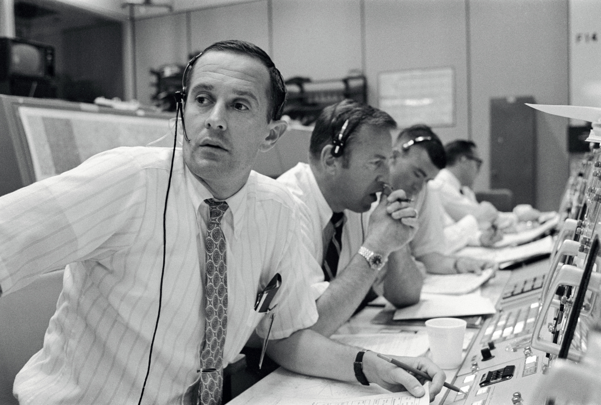
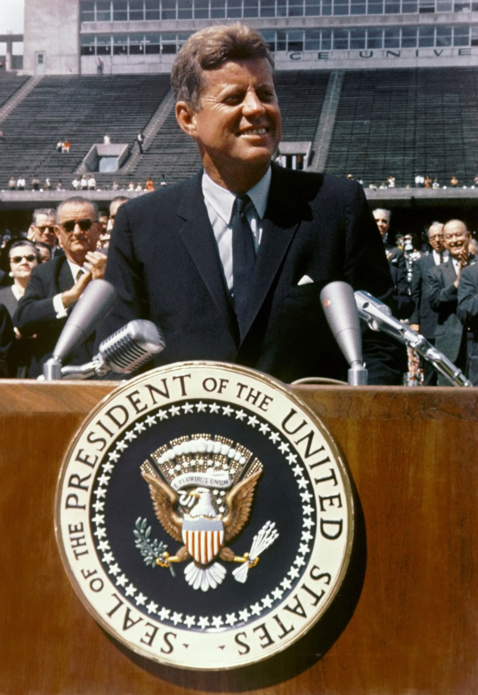
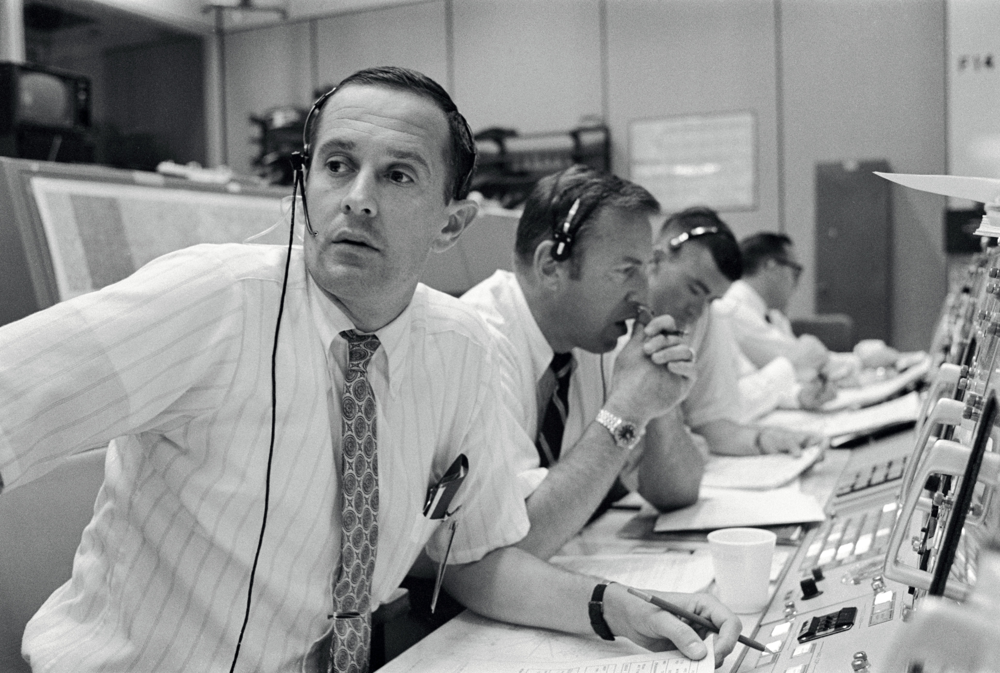
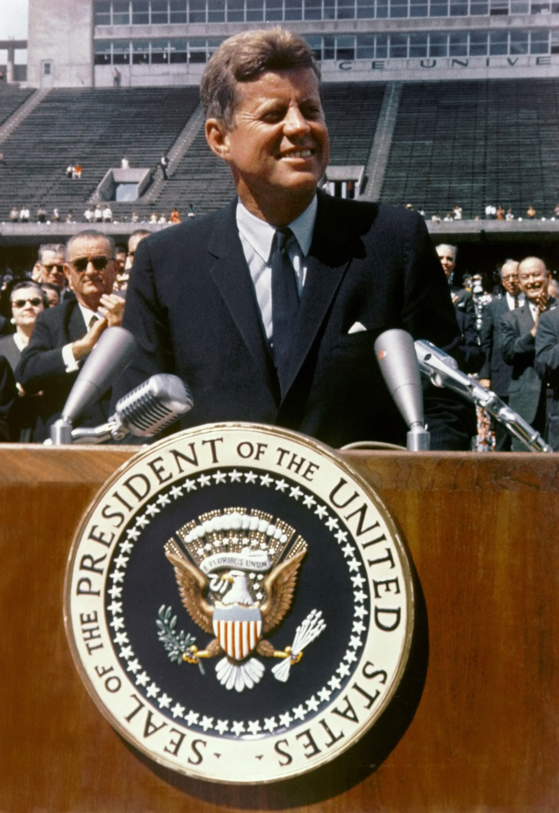

Apollo 11 - Journey to the moon
In the late 1950s and early 1960s, the United States was engaged in the Cold War, a geopolitical rivalry with
the
Soviet Union.[16] On October 4, 1957, the Soviet Union launched Sputnik 1, the first artificial satellite. This
surprise success fired fears and imaginations around the world. It demonstrated that the Soviet Union had the
capability to deliver nuclear weapons over intercontinental distances, and challenged American claims of
military,
economic and technological superiority.[17] This precipitated the Sputnik crisis, and triggered the Space Race
to
prove which superpower would achieve superior spaceflight capability.[18] President Dwight D. Eisenhower
responded
to
the Sputnik challenge by creating the National Aeronautics and Space Administration (NASA), and initiating
Project
Mercury,[19] which aimed to launch a man into Earth orbit.[20] But on April 12, 1961, Soviet cosmonaut Yuri
Gagarin
became the first person in space, and the first to orbit the Earth.[21] Nearly a month later, on May 5, 1961,
Alan
Shepard became the first American in space, completing a 15-minute suborbital journey. After being recovered
from
the
Atlantic Ocean, he received a congratulatory telephone call from Eisenhower's successor, John F. Kennedy.[22]
Since the Soviet Union had higher lift capacity launch vehicles, Kennedy chose, from among options presented by
NASA,
a challenge beyond the capacity of the existing generation of rocketry, so that the US and Soviet Union would be
starting from a position of equality. A crewed mission to the Moon would serve this purpose.[23]
On May 25, 1961, Kennedy addressed the United States Congress on "Urgent National Needs" and declared:
I believe that this nation should commit itself to achieving the goal, before this decade [1960s] is out, of
landing
a
man on the Moon and returning him safely to the Earth. No single space project in this period will be more
impressive
to mankind, or more important for the long-range exploration of space; and none will be so difficult or
expensive
to
accomplish. We propose to accelerate the development of the appropriate lunar space craft. We propose to develop
alternate liquid and solid fuel boosters, much larger than any now being developed, until certain which is
superior.
We propose additional funds for other engine development and for unmanned explorations—explorations which are
particularly important for one purpose which this nation will never overlook: the survival of the man who first
makes
this daring flight. But in a very real sense, it will not be one man going to the Moon—if we make this judgment
affirmatively, it will be an entire nation. For all of us must work to put him there.
— Kennedy's speech to Congress[24]
On September 12, 1962, Kennedy delivered another speech before a crowd of about 40,000 people in the Rice
University
football stadium in Houston, Texas.[25][26] A widely quoted refrain from the middle portion of the speech reads
as
follows:
Kennedy, in a blue suit and tie, speaks at a wooden podium bearing the seal of the President of the United States.
Vice President Lyndon Johnson and other dignitaries stand behind him.
President John F. Kennedy speaking at Rice University on September 12, 1962
There is no strife, no prejudice, no national conflict in outer space as yet. Its hazards are hostile to us all.
Its
conquest deserves the best of all mankind, and its opportunity for peaceful cooperation may never come again. But
why,
some say, the Moon? Why choose this as our goal? And they may well ask, why climb the highest mountain? Why, 35
years
ago, fly the Atlantic? Why does Rice play Texas? We choose to go to the Moon! We choose to go to the Moon ... We
choose to go to the Moon in this decade and do the other things, not because they are easy, but because they are
hard;
because that goal will serve to organize and measure the best of our energies and skills, because that challenge
is
one that we are willing to accept, one we are unwilling to postpone, and one we intend to win, and the others,
too.[27]
In spite of that, the proposed program faced the opposition of many Americans and was dubbed a "moondoggle" by
Norbert
Wiener, a mathematician at the Massachusetts Institute of Technology.[28][29] The effort to land a man on the Moon
already had a name: Project Apollo.[30] When Kennedy met with Nikita Khrushchev, the Premier of the Soviet Union
in
June 1961, he proposed making the Moon landing a joint project, but Khrushchev did not take up the offer.[31]
Kennedy
again proposed a joint expedition to the Moon in a speech to the United Nations General Assembly on September 20,
1963.[32] The idea of a joint Moon mission was abandoned after Kennedy's death.[33]
An early and crucial decision was choosing lunar orbit rendezvous over both direct ascent and Earth orbit
rendezvous.
A space rendezvous is an orbital maneuver in which two spacecraft navigate through space and meet up. In July 1962
NASA head James Webb announced that lunar orbit rendezvous would be used[34][35] and that the Apollo spacecraft
would
have three major parts: a command module (CM) with a cabin for the three astronauts, and the only part that
returned
to Earth; a service module (SM), which supported the command module with propulsion, electrical power, oxygen, and
water; and a lunar module (LM) that had two stages—a descent stage for landing on the Moon, and an ascent stage to
place the astronauts back into lunar orbit.[36] This design meant the spacecraft could be launched by a single
Saturn
V rocket that was then under development.[37]
Technologies and techniques required for Apollo were developed by Project Gemini.[38] The Apollo project was
enabled
by NASA's adoption of new advances in semiconductor electronic technology, including metal-oxide-semiconductor
field-effect transistors (MOSFETs) in the Interplanetary Monitoring Platform (IMP)[39][40] and silicon integrated
circuit (IC) chips in the Apollo Guidance Computer (AGC).[41]
Project Apollo was abruptly halted by the Apollo 1 fire on January 27, 1967, in which astronauts Gus Grissom, Ed
White, and Roger B. Chaffee died, and the subsequent investigation.[42] In October 1968, Apollo 7 evaluated the
command module in Earth orbit,[43] and in December Apollo 8 tested it in lunar orbit.[44] In March 1969, Apollo 9
put
the lunar module through its paces in Earth orbit,[45] and in May Apollo 10 conducted a "dress rehearsal" in lunar
orbit. By July 1969, all was in readiness for Apollo 11 to take the final step onto the Moon.[46]
The Soviet Union appeared to be winning the Space Race by beating the US to firsts, but its early lead was
overtaken
by the US Gemini program and Soviet failure to develop the N1 launcher, which would have been comparable to the
Saturn
V.[47] The Soviets tried to beat the US to return lunar material to the Earth by means of uncrewed probes. On July
13,
three days before Apollo 11's launch, the Soviet Union launched Luna 15, which reached lunar orbit before Apollo
11.
During descent, a malfunction caused Luna 15 to crash in Mare Crisium about two hours before Armstrong and Aldrin
took
off from the Moon's surface to begin their voyage home. The Nuffield Radio Astronomy Laboratories radio telescope
in
England recorded transmissions from Luna 15 during its descent, and these were released in July 2009 for the 40th
anniversary of Apollo 11.[48]

 


